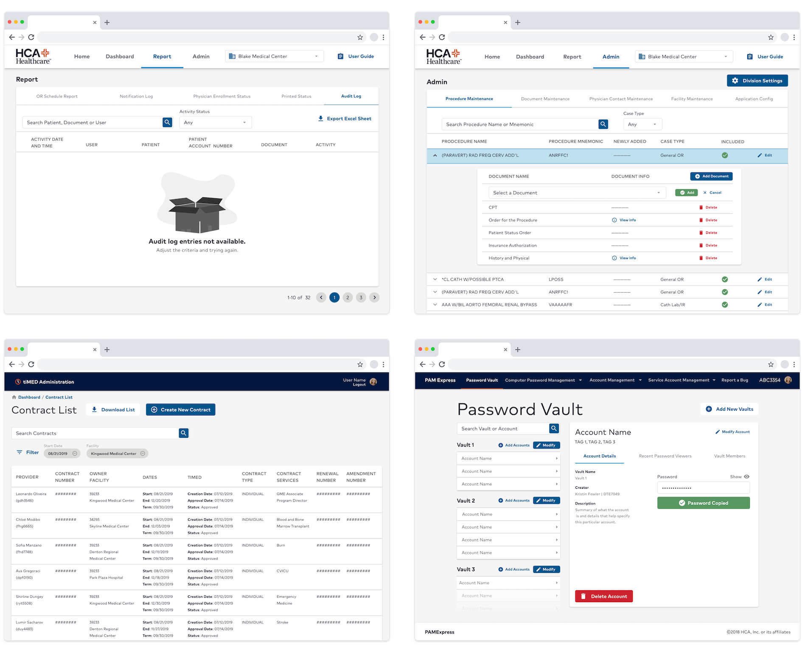
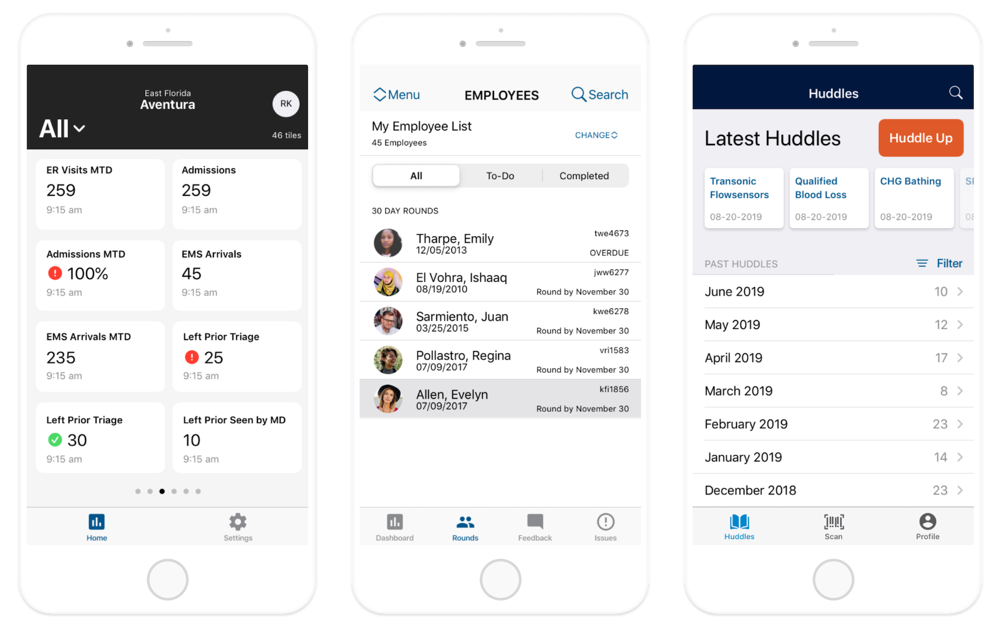

Product work and design system growth has allowed me to touch many different interface environments. One of my first projects as a UX Designer at HCA Healthcare was a tvOS application (see below)
In this project alone I learned the principles of a 10-foot view and how users interact differently with TVs than desktops. A bit later after this project we started to reach the discovery phase of a tvOS kit for our design system. I then read and rewrote Apple’s entire tvOS Human I terrace Guidelines to meet the needs of HCA Healthcare and Neutron. This documentation taught me the laws of tvOS but also the many components built within the system and how they can be used to solve IA and UX needs.
Responsive web is notably the most frequent application interface and it is no surprise. My college degree is in web development for a reason. That said, the first kit built with Neutron was for responsive web. Many projects and consults have been web-focused while also establishing mobile variants.
The iOS interface has been our most recent design system push. With this I again read and rewrote Apple’s entire iOS HIG. Like all of Apple’s systems, iOS interfaces has predefined interface elements that provide valuable experiences and benefit the development process as well. Mobile designers should be knowledgeable about these features as not to overlook them. They are advantageous to a successful native mobile product.
